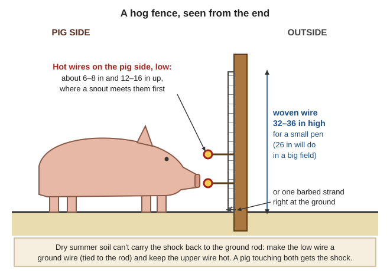
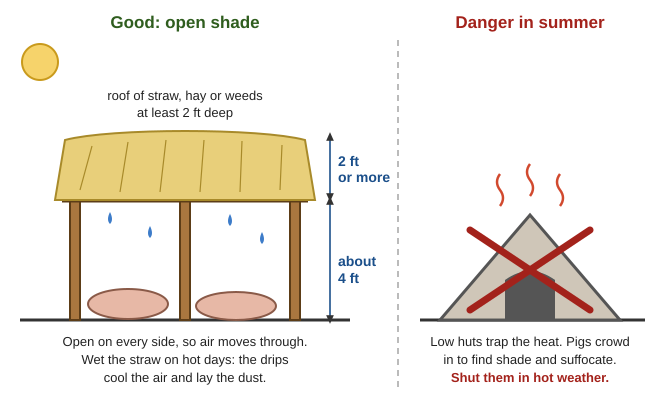
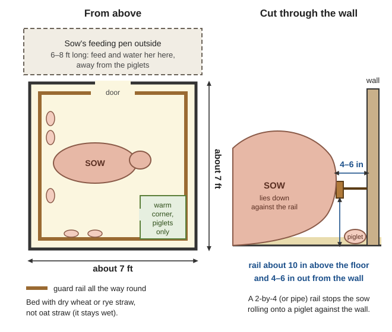
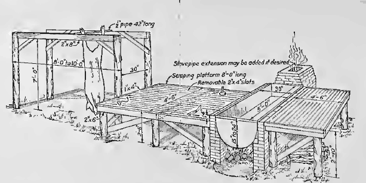
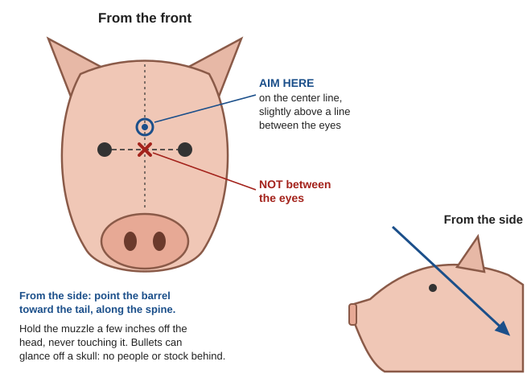
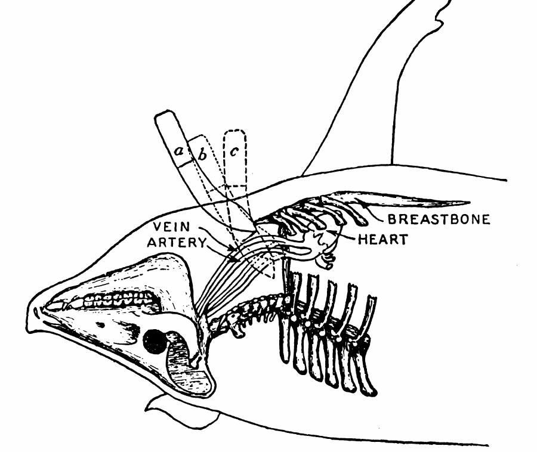
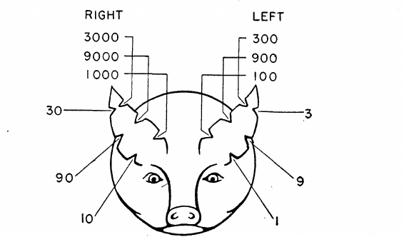

📘 Guides › 🐐 Animals · 🆘 Emergency · 📇 Index A–Z · 💬 Ask
How to keep pigs with no feed store, no vet and no fridge: choosing lard, bacon and pasture breeds, fences that hold pigs when the charger is dead, rooting, feeding on Pacific Northwest pasture and on grain the pigs harvest themselves, acorns and kitchen scraps, what never to feed, shade and water in our hot summers, breeding, farrowing and piglets, health with no vet, butchering day in cold weather, rendering lard, keeping trichinosis and tapeworm out of the family, and why a pig must never get loose. Curing and smoking are in the Preserving Food guide. The pig books are in Animals\Cattle-Horses-Pigs (USDA Pasture and Grain Crops for Hogs in the Pacific Northwest, Swine Production and Pork Slaughtering, OSU Care of New Feeder Pigs, Slaughter and Preservation of Meat), with Pork on the Farm in Homestead-Skills\Food-Crafts-Tools, lard in Food-From-Scratch\Wild-and-Local-Staples, smokehouse and hoist plans in Food-Storage\Curing-Smoking, no-vet medicine and the diseases people catch from pigs in Animals\Veterinary, and poisonous plants in Wild-Plants. The main CVM book, Raising Healthy Pigs, has photos but no text the search tool can read, so this guide does not quote it.
The short version
- Pigs die of heat. Shade and clean water all day: ½–1½ gallons per 100 lb of pig a day, more for nursing sows. Salty slop with too little water kills (No Animal Doctor, p. 47; Peace Corps Vol 4, p. 210; p. 332).
- Boil every scrap that has touched meat, and boil milk and whey, before pigs get them: raw meat scraps give pigs trichinosis, raw milk and garbage spread TB (USDA FB 1437, p. 5; Zoonoses, p. 27).
- Cook pork until it is gray all through (about 170 °F). Never taste raw sausage; curing and smoking don't make pork safe (Zoonoses, p. 121; USDA FB 1186, p. 41).
- Sows crush piglets. Farrow in a pen about 7 × 7 ft with a guard rail 10 in off the floor and 4–6 in from the wall; over half of newborn deaths come in the first 24 hours (FB 1437, pp. 24, 26).
- Piglets on a floor need iron: put fresh sod or clean soil in the pen (FB 1437, p. 32).
- Butcher in cold weather: carcass down to 34–40 °F within 24 hours; fresh pork eaten or preserved within 3–5 days (FB 1186, p. 3; USDA FB 2138, p. 24).
- Never let a pig loose, and never let pigs reach a latrine (pork tapeworm) (Zoonoses, p. 112). Escaped pigs go wild (rule of thumb).
- One 200-lb hog ≈ the pork and lard two people eat in a year (FB 2138, p. 6); a family of four needs two or more (see "How many pigs feed a family").
The hog is "the most valuable farm animal in utilizing farm wastes" (FB 1437, p. 4): scraps, whey, gleanings, acorns and culls become meat and fat. With no store oil, lard is the household's cooking fat, so choose for fat as well as meat.
| Type | Built like | Best fed on | Breeds named in the books |
|---|---|---|---|
| Lard | Short-legged, thick, compact; small litters | Corn and other fattening grain | Poland China: black with six white points, 600–1,000 lb grown, fast-gaining, good survival (Peace Corps, pp. 280–281; p. 284) |
| Bacon | Long, lean, muscled | Peas, wheat, barley, oats, rye, dairy by-products and roots: what our valley grows | Landrace: long, prolific, efficient. Yorkshire: good mothers, large litters, forage well, but do poorly with little care (pp. 281, 284) |
| Meat (in between) | Large, fast-growing, hungry | Grain plus protein | Duroc: red, litters survive well, sows "fierce in the defense of their young." Hampshire: white belt, sows raise a high share of their pigs; smaller, slower (p. 284) |
Pasture pigs: a breed "selected genetically for production" needs "high quality feed, a disease-free environment, good housing" (Peace Corps, p. 280). On pasture and leftovers pick hardy crossbreds or old grazing breeds that mother well, such as Berkshire, Tamworth, Large Black or the small Kunekune, over modern indoor lines (rule of thumb). Crosses give bigger litters, more pigs living and faster growth (p. 282). Sunburn is a trait to select against (p. 281): under our July sun, dark-skinned pigs fare better (rule of thumb).
Buying: "start with only a few sows," of one breed and herd, ideally already bred. A good sow lets you into her pen any time, has legs long enough to keep her udder off the ground and at least six teats in each row; keep no pigs from a cross or nervous sow (FB 1437, pp. 5–7). Buy only from herds you know are healthy. Feeder pigs (weaned pigs raised for meat) need a clean, dry, draft-free pen ready; ask what they ate and change feed slowly (OSU EM 9271, pp. 1, 3).
Room per pig under cover: sows, gilts and boars 15–20 sq ft; sow and litter 50–65; weaners to 75 lb 5–6; 75–125 lb 6–7; 125–200 lb 8–10; build near the house and the feed, proof against predators (Peace Corps, p. 288). A 50-lb pig is comfortable at 70–82 °F, a 215-lb one at 50–75 °F, and Oregon nights chill young pigs "through the month of May": bed deep with straw (OSU EM 9271, pp. 1–2) and never let pigs sleep on damp bedding (FB 1437, p. 34). A roof on posts with straw-bale walls is a winter house; take the bales out and it is a summer shade (FB 1437, p. 38). Feed in a V-shaped trough with slats across the top, 1–2 ft per pig (pigs fed on the ground get more worms), and water in a heavy concrete bowl they can't tip (Peace Corps, pp. 290–291). Dig or plow pig lots twice a year and sow them to pasture (FB 1437, p. 37): worm eggs live years in damp soil but die in weeks of sun (No Animal Doctor, p. 347).
Fence "hog tight" with woven wire: about 26 in high on a big field with one barbed strand at the bottom, just above the ground, and 32–36 in around a small pen, where pigs push harder. "Probably 90 percent" of a woven-wire fence's strength is in well-braced corner posts (FB 1437, p. 21). Pigs root under woven wire, so run "one or two electric fence wires near the bottom" (OSU EM 9271, p. 5) on the pig side, where a snout meets them first: about 6–8 in and 12–16 in up (rule of thumb).

Woven wire with low hot wires on the pig side; in a dry summer the lower wire becomes the ground wire (FB 1437, p. 21; OSU EM 9271, p. 5) (a diagram drawn for this guide).Pigs root hardest in wet ground (FB 599, p. 3), and west of the Cascades winter tramping "puddles" (packs and ruins) wet soil: take them off pasture in heavy rain, except on sandy soil or tight sod (p. 12). English ryegrass sod "stands tramping well" (p. 15), and straw spread first protects heavy soil (p. 17). Keep the winter lot on your best-drained, gravelly ground (rule of thumb). Ringed hogs (rings in the top of the snout) can't dig tubers (same page); buy rings and a ringer now (rule of thumb). Rooting is also free plowing: hogs work stalks into the soil and spread their droppings evenly (p. 7). Turn pigs onto a finished garden in early fall, then move them before the mud (rule of thumb).
"Store livestock food in a secure place" (ODFW, p. 2), and shelter animals at night against cougars (ODFW, p. 2): a night pen near the house and carrying off carcasses are rated effective against lions, bears and coyotes (UC ANR 8598, p. 5). Bears raid pig pens and take piglets (rule of thumb). Sows with piglets and boars "may attack and bite" (No Animal Doctor, p. 47): carry a board to hold between you, never turn your back on a boar, keep children out of the pen, and keep pigs from chickens, which they kill (rule of thumb).
Pasture alone is not enough for growing pigs: they get "big bellied, and thin in flesh or stunted," though dry sows can hold condition on good pasture (FB 599, p. 4). On pasture feed grain at about 2–3% of live weight a day, or 1% for a light ration, then fatten on all they clean up three times a day (p. 5); a growing pig on abundant pasture gets 1–2 lb of grain a day (FB 1437, p. 15). Change feed slowly, a quarter at a time over at least a week (p. 10).
USDA Farmers' Bulletin 599 was written for Washington, Oregon and Idaho; in western Oregon it finds hog pasture "throughout the entire year" (FB 599, pp. 2, 12–15):
| Crop | Sow | Graze | Hogs per acre |
|---|---|---|---|
| Red clover (drained soil), alsike (wet) | A year ahead | April–November; best April–June, fades in drought | 8–16 |
| Alfalfa | A year ahead | April–November; "highly successful in the Umpqua and Rogue River Valleys on irrigated and subirrigated land" | 8–16 |
| Rape in hoed rows | April 1, 15 and 30 | June–November; green all summer if cultivated | 8–14 |
| Vetch with wheat or oats | In corn in July, or on stubble in early fall | October/November–April | 5–8 |
| English ryegrass, 10–15 lb seed per acre | Spring or fall, with grain | Early fall to the next July | 5–14 |
| Winter wheat | September–October | February–April | 8–16 |
Split pasture in two or more and move hogs every 7–10 days, turning them in when clover or alfalfa is 3–4 in high and rape, kale or vetch 8–10 in (p. 3); legume pasture means less grain (p. 6). Never plan "just enough": an acre carries 5–15 hogs of 100 lb (FB 1437, p. 19). Here grass and clover quit in July unless watered, so plan summer around grain to hog off (rule of thumb); serpentine ground grows poor, low-calcium pasture (NRCS, p. 49).
"Hogging off" means turning hogs into a ripe field to harvest it themselves: no threshing or hauling, and the hogs need only "water, shade, and salt" (FB 599, pp. 6–7). In western Oregon: beardless barley July 1–20, soft club winter wheat July 10–August 10, field peas July 25–October 1, corn (planted April 20–May 10) from mid-September, earlier in the Rogue Valley (pp. 15–16). Bearded barley and hard wheat hurt pigs' mouths (pp. 8–9). Fence off only what the herd cleans up in 15–20 days, or rain sprouts the peas and molds the corn; to size it, count how many days a fenced trial acre lasts (pp. 9, 11).
Thousand-headed kale (sown March–April, transplanted in June) stands in the field and feeds October–April, best from a rack; squash planted about May 25 and stored dark under straw feeds November–January (FB 599, p. 16), and squash and pumpkins are "favorite foods" (OSU EM 9271, p. 5). Mangels, beets, carrots and rutabagas go whole from the field (FB 599, pp. 17, 22), though good alfalfa does more (FB 1437, p. 10). Pigs dig Jerusalem artichokes on sandy creek land all winter (FB 599, p. 17). Cooked potatoes: 4½ lb equal 1 lb of corn, no more than 4 lb of potato to 1 of grain (FB 1437, p. 9). Chopped, soaked alfalfa hay can be half the ration of pigs you aren't hurrying (FB 599, p. 22), and unthreshed bundle grain carries dry sows through winter (p. 24).
"Mast" is the nuts that fall in autumn. An English feeder reckoned a peck of acorns a day with a little bran put on about a pound a day for two months; California hogs ate raw acorns "with impunity," though in England they were "occasionally condemned as fatal" (Chesnut 1902, p. 353). OSU replaced 15–30% of a finishing ration with ground cull hazelnuts for the last 42 days, as Spain and Italy finish ham pigs on acorns (OSU EM 9271, p. 7). The oak poison is in young leaves, buds and green acorns (WSU, p. 27). Gather the ripe brown acorns of Oregon white oak, black oak and tanoak in September–November, feed them with other feed, never alone, and dry some for winter (rule of thumb). Bears work the same groves, so bring the acorns to the pigs, never the pigs to the woods (rule of thumb). Windfall fruit feeds pigs too, and picking it up keeps bears away (ODFW, p. 2).
| Never feed | Why | Source |
|---|---|---|
| Raw meat, bones or garbage that touched meat; any carcass; dead rats; raw bear or other wild meat | Trichinosis, TB and more; wild trichinella survives freezing and smoking | FB 1437, pp. 5, 38; Zoonoses, p. 120; "Disease and safety" in the Hunting guide |
| Raw poultry offal; raw milk or whey from untested animals | Bird TB; cattle TB | FB 1437, p. 11 |
| Human waste: pigs must never reach a latrine | Pork tapeworm, which can cause seizures in people | Zoonoses, pp. 110, 112 |
| Green or sprouted potatoes, potato and tomato vines, nightshade | Solanine | WSU, p. 21 |
| Poison hemlock (pigs like it); water hemlock roots (pigs dig them) | Death within hours; poison hemlock on days 30–60 of pregnancy deforms piglets | AIB 415, p. 81; WSU, pp. 12–13 |
| Cocklebur seedlings; early-spring death camas; hedge trimmings (yew, oleander, rhododendron); lots of green acorns | Poisoning; yew kills before signs show | AIB 415, pp. 113, 115; PNW 104, p. 2; WSU, pp. 15, 27 |
| Salty slop, brine or cured-meat trimmings without plenty of water | Salt poisoning: blind, deaf, convulsions, death | No Animal Doctor, p. 332 |
Keep sheep out of the pig feed: it can hold enough copper to poison them (No Animal Doctor, p. 74).
📚 Go deeper: USDA FB 599 — PNW hog crops, dates and grazing systems; FB 1437, pp. 8–15 — grains, protein, minerals and sow rations; hay racks, FB 599, pp. 22–23.
"Pigs of all ages can overheat if they struggle, and can even die from heat stress. If boars overheat, they can be sterile for several months. Sows easily overheat when giving birth." Handle pigs only in the cool of early morning or evening (No Animal Doctor, p. 47). "Hogs suffer greatly from heat and must have shade" (FB 1437, p. 37), and sunburn is the other summer hazard (OSU EM 9271, p. 5).

Open straw shade, wetted on hot days; low huts trap heat and must be shut in summer (FB 1437, p. 37) (a diagram drawn for this guide).A pig down in the heat (panting, open mouth, wobbling, lying flat): stop, get it into shade, pour cool water over it, especially the head, let it rest, then offer water; an overheated animal may not drink until it cools (No Animal Doctor, p. 124). A pig that went without water and acts blind or convulses has salt poisoning: small drinks often, not all it wants at once (p. 332).
| What to know | |
|---|---|
| Heat | First at about 5 months if well fed (separate young boars and gilts by then); every 21 days, lasting 1–3 days: swollen red vulva, restless grunting; in standing heat she stands stock-still when you press on her back (Peace Corps, p. 228) |
| First breeding | Not before 8 months, on her third heat, to farrow at about a year (same page; FB 1437, p. 22); don't rebreed a first-litter gilt for fall (same page) |
| Mating | Twice, about 12 hours apart (Peace Corps, p. 230); a young boar serves one sow a day (FB 1437, p. 22). Write the date down |
| Gestation | 114 days, "3 months, 3 weeks, and 3 days" (Peace Corps, p. 231); 112–115 in FB 1437 (p. 22). Bred December 15 = due about April 8 (arithmetic) |
| The boar | Not used before 8 months; never one with a single testicle or from a ruptured litter (FB 1437, pp. 7–8). One serves 10–15 sows for 5–6 years (Peace Corps, p. 230); a borrowed boar can bring brucellosis (p. 282) |
| The pregnant sow | In good flesh, not fat; about 1½ lb of feed per 100 lb of sow a day (2 lb for a gilt), with grain scattered in the field to make her walk (FB 1437, p. 13). A sow that eats her pigs was usually fed or kept badly (p. 15) |
Farrow in spring when the nights have warmed: newborn pigs want about 95 °F for three days, then 85 °F over three weeks, and "demand the most heat of any young domestic livestock" (OSU EM 9271, p. 8); with no heat lamps you have timing, straw and the sow's own heat (rule of thumb). Not in August either: sows overheat giving birth (No Animal Doctor, p. 47).

The guard rail keeps the sow from pinning a piglet against the wall (FB 1437, pp. 24–26) (a diagram drawn for this guide).Signs she is close: the udder fills 7–10 days ahead; colostrum (first milk) can be squeezed out within 24 hours; she grows restless, makes a nest, and may turn aggressive (Peace Corps, p. 231). Halve her feed the day before; none for 24 hours after, but plenty of lukewarm water (FB 1437, p. 15).
Someone should be there, checking every hour with a light ready (FB 1437, p. 25; Peace Corps, p. 231).
Castrate boar pigs you won't breed: no stray litters or inbreeding, calmer pigs, and no boar taint (the foul smell of mature boar meat) (No Animal Doctor, p. 192; OSU EM 9271, p. 6). Do it at about 2 weeks, while they suckle, so they heal before weaning (FB 1437, p. 32; Peace Corps, p. 235).
Wean at 8 weeks or later: a good sow milks to 10–12 weeks, and a pig stunted by early weaning never catches up. Cut the sow's feed 4–5 days before, then take her away and leave the pigs in their pen (FB 1437, pp. 32–33). She comes back in heat 3–5 days later (Peace Corps, p. 229). Three litters in two years is a good average; fall pigs need extra care, and none should come after October 15 (FB 1437, pp. 33–34).
📚 Go deeper: FB 1437, pp. 25–30 — bedded pen, cutting teeth, hover, crate; Peace Corps, p. 289 — farrowing stalls; No Animal Doctor, p. 192 — castration.
Know normal: about 102.2 °F for a grown pig, 103.6 °F for a young one (No Animal Doctor, p. 66); OSU uses 102.5 °F ± 1 (EM 9271, p. 4). Pulse and breathing are in Illinois Valley — Start Here. Watch daily for coughing, fever, going off feed, dullness and hard or fast breathing, and act at the first sign. Give shots in the neck just behind and below the ear, never the ham or loin, and wait out every withdrawal time before slaughter (EM 9271, p. 4). To hold a big pig, slip the loop of a finger-thick rope at least 10 ft long into its mouth behind the big canine teeth and tie it low to a post (No Animal Doctor, p. 47). Medicines in general: the Medical guide; this guide gives no doses.
Prevention does most of the work. The old USDA sanitation system controls most worms: a clean farrowing pen, the sow washed before farrowing, a clean trip to clean pasture, and clean pasture for the pigs until 4 months old (FB 1437, p. 41). Disinfect with soap and water, then chlorine or iodine, then 48 hours of sun (Peace Corps, p. 288). Change bedding before it is wet and foul (FB 1437, p. 37). Keep new pigs apart 30–60 days (rule of thumb; FB 1437 holds new breeding stock through two blood tests 60 days apart, p. 40).
| Trouble | Signs | What to do |
|---|---|---|
| Large roundworm (Ascaris) | Poor growth; white spots on the liver at butchering | Clean pens, sun, fresh ground; worm sows the month before farrowing if you have a wormer (No Animal Doctor, pp. 346–347) |
| Swine flu | Off feed, violent cough, vomiting, fever | Warm dry quarters, rest, fresh water (FB 1437, p. 38) |
| Erysipelas | High fever, hot swollen joints, purple ears and belly, raised diamond-shaped red patches; later lameness | Penicillin if you have it (No Animal Doctor, p. 294). People catch it handling infected meat: gloves (FB 1437, p. 39) |
| Brucellosis | Abortions, weak or stillborn pigs, sterility, hind-end weakness, swollen testicles | Buy from clean herds, isolate newcomers, cull. It infects people: gloves at farrowings (FB 1437, pp. 39–40) |
| Tuberculosis | Found at slaughter | From TB birds and cattle and raw milk: cook offal, boil milk (FB 1437, p. 40) |
| Atrophic rhinitis | Sneezing young pigs, later a twisted snout | No cure once bent; clean, airy pens (No Animal Doctor, p. 293) |
| Lice and mange | Scratching, scabby skin, poor growth | Worst in thin pigs (Peace Corps, p. 274); clean bedding (No Animal Doctor, pp. 131–133); not the old dips |
| Scours in new feeder pigs | Diarrhea | 20% ground whole oats or 10% alfalfa in the feed for some weeks; warmth; sanitation (OSU EM 9271, pp. 3–4) |
Dead pigs: never let pigs eat one; burn it, or bury it 4 ft deep under quicklime (FB 1437, pp. 38–39); see "Dead animals and gut piles" in the Sanitation guide.
📚 Go deeper: Peace Corps Vol 4, pp. 244–278 — swine diseases and parasites (skip its chemical tables).

Neighbors who kill several hogs a year can share a scalding vat over a firebox, a scraping platform and a hanging rail (AWI-68, p. 7).Shoot or stun first, and make the first shot count (FB 2138, p. 7). The brain is small and behind thick sinuses: aim on the center line of the forehead, slightly above a line between the eyes, not between the eyes (UF VM114, p. 9), toward the spinal canal (AVMA, p. 119). A .22 long rifle does for young animals, but hollow points may not get through an adult skull: use a heavier bullet on old sows and boars. Hold the muzzle a few inches off the head (VM114, p. 5); bullets "glance from a hog's skull," so keep people and stock out of line (FB 2138, p. 7).

Aim slightly above the eye line, on the center line, toward the tail (UF VM114, p. 9; AVMA, p. 119) (a diagram drawn for this guide).Stick at once, with the hog hoisted by a hind leg or on its back, a helper astride holding the front feet (FB 2138, pp. 7–8): open the skin about 3 in in front of the breastbone; push the knife in edge down, straight toward the breastbone; follow the bone down until the knife slips under it and push about 1 in more; cut toward the backbone, then thrust forward toward the head to cut the artery. Stay on the center line or you stick a shoulder; don't stick the heart; let it bleed out. Keep the hole no wider than the blade, so scald water can't get in (Slaughter and Preservation of Meat, p. 62).

The knife (a) into the fat, (b) above the artery, (c) after the cut; the heart is not the target (USDA FB 2138, p. 8).Scalding keeps the skin for cracklings, salt pork and hams that store well, but takes much hot water and fuel. The books differ, and all work: 143 °F ± 2 for 4–4½ minutes (Slaughter and Preservation of Meat, p. 63); 140–145 °F in a barrel, as hotter water may "set" the bristles (AWI-68, p. 7); or on a farm 155–165 °F to start, the hog kept moving and pulled out often (FB 2138, p. 9). Test, don't guess: when the hair on ham, flank, belly and head slips out, take the hog out (Slaughter and Preservation of Meat, p. 63). Scrape fast, before the skin sets: twist the hair off the legs, pull dewclaws and toes with the hook while hot, scrape with the bell scraper on edge, put sacks and hot water on stubborn patches, then rinse, singe and shave (FB 2138, pp. 9–11). Skinning suits hogs over about 250 lb: prop it on its back with bricks and skin it like a beef, slowly, since the skin is thin (Slaughter and Preservation of Meat, pp. 62–63); it needs no barrel or fire, but you lose the rind (rule of thumb).
Eat, cure or can fresh pork within 3–5 days: it spoils faster than other meat (FB 2138, p. 24), and can it only in a pressure canner (pp. 39–40). Curing, smoking and storing hams and bacon: "Curing pork and venison" in the Preserving Food guide; smoke with hardwood, never pine, at 100–120 °F, in a smokehouse at least 50 ft from other buildings (FB 2138, pp. 32–34).
📚 Go deeper: USDA FB 2138 — the whole job in photos; AWI-68 — hoists, scald vats, smokehouses; Oregon custom-exempt FAQ, p. 2 — in normal times custom-killed meat "cannot be sold, traded, bartered or given away," so trade live pigs or shares of a live pig.
Lard is 9–13% of the live weight of a meat-type hog and 14–18% of a fat one (FB 2138, p. 6); a 225-lb hog gave 27 lb of fat for the kettle (p. 22).
Yields: leaf fat 90–93% lard; mixed leaf, back and cutting fat 80–85%; gut fat 55–65%; pressed cracklings 4–6% of the fat (FB 2138, p. 42): the 27 lb of fat makes roughly 22 lb of lard (arithmetic). Air, light, water left in, and warm storage make lard rancid; 10% beef fat firms soft lard; slightly rancid lard is rescued by heating it with sliced potatoes until they brown, then straining (Minnesota, p. 4). ⚠️ Hot fat burns badly: keep children back, keep a lid at hand to smother a fire, and never put water on burning fat (rule of thumb). Eat the cracklings as they are or in cornbread (rule of thumb). More in "Salt, sweeteners and fat" in Food From Scratch; soap in "Soap from fat and ashes" in the Make-Do Household guide.
Trichinosis is a worm in the muscle of pigs, rats, bears and other meat-eaters, caught from raw or undercooked meat, most often pork. 8–15 days later come sudden muscle pain and swollen upper eyelids, then eye pain, sweats and fever to 104 °F; heart and nerve damage can kill in weeks 3–8 (Zoonoses, pp. 120–121). If that follows a meal of pork or bear, see the Medical guide.
Pork tapeworm (Taenia solium): pigs get the cysts by eating human feces; people get the tapeworm from undercooked pork, and its eggs can grow cysts in another person's brain, "the major cause of seizures" in many poor countries (Zoonoses, pp. 109–110). Pigs must never reach a latrine, outhouse pit or human waste, raw sewage must not fertilize their ground, and all pork must be cooked well (pp. 112–113); salting and pickling don't kill the cysts (p. 113). Latrines are in the Sanitation guide.
Also from pigs: erysipelas from handling infected meat, brucellosis, and TB through raw milk and garbage (FB 1437, pp. 39–40). Wear gloves to butcher and to help a farrowing, cover cuts, wash well, and keep pregnant women away from abortions and afterbirths (rule of thumb). Bites, kicks and knife cuts: Field Care guide.
A pig that gets loose for good does not stay a farm pig (rule of thumb). Free-ranging pigs spread diseases and parasites to people, lose more to predators, and breed with no control (Peace Corps, p. 285); free-range village pigs are "not-too-distant offspring" of wild ones (p. 283). A gilt can come in heat at about 5 months and farrow 114 days later (pp. 228, 231), and a good sow raises 8 or more (FB 1437, p. 7): one loose pair can be dozens within two years (arithmetic). Feral pigs root up meadows, camas beds and creek banks, raid gardens and grain, carry brucellosis and trichinella, and a wild sow is dangerous (rule of thumb).
| When | Pigs | Work |
|---|---|---|
| Dec–Jan | Sows bred; fat hogs ready; mud | Kill, cut, render and cure on cold dry days; breed sows (bred Dec 15 = farrow about Apr 8 (arithmetic)); pigs on the drained winter lot or ryegrass sod; kale, roots, squash, artichokes and bundle grain |
| Feb–Mar | Pregnant sows | Winter wheat and vetch pasture; sow peas, beardless barley and spring grain to hog off; dig and seed old pig lots; clean farrowing pens and leave them in the sun |
| Apr–May | Farrowing | Pens ready 3 days early; snip teeth; sods for iron; castrate at 2 weeks; creep at 3 weeks; plant rape (Apr 1, 15, 30), corn (Apr 20–May 10), squash (May 25) |
| Jun–Jul | Weaned at 8–10 weeks; heat begins | Wean onto clean pasture; shade, wallow and water daily; transplant kale; hog off barley (Jul 1–20) and wheat (Jul 10–Aug 10); no open burning in fire season (Wildfire guide) |
| Aug–Sep | Growing pigs; heat and smoke | Peas hogged off to Oct 1; no hauling or breeding in the heat of the day; rebreed a grown sow early in the morning for a fall litter |
| Oct–Nov | Acorns fall; rains start | Corn hogged down; acorns, hazelnuts and windfalls; sow vetch, ryegrass and winter wheat; pigs off soggy pasture; no fall litter after Oct 15 (FB 1437, p. 33); plan the kill |
Crop dates are the book's for western Oregon (FB 599, pp. 12–16); the fit to our valley is a rule of thumb. April pigs are 7–8 months old by December, when FB 599's well-fed pasture hogs reach 170–225 lb (p. 5); OSU says feeder pigs can be ready at six months (EM 9271, p. 5).
| Goal | What it takes | Source |
|---|---|---|
| Pork and lard | One 200-lb meat-type hog ≈ a year's pork and lard for two. A family of four: 2 hogs; 3–4 if pork and lard are your main meat and only fat | FB 2138, p. 6 (arithmetic; rule of thumb) |
| One hog gives | 225 lb live → 176 lb carcass → 113 lb hams, picnics, bacon, loin and butt, 34 lb ribs, sausage, feet and head, 27 lb fat (≈ 22 lb lard) | FB 2138, p. 22 (lard: arithmetic) |
| Grain | 300–350 lb of grain plus 25–35 lb of protein feed per 100 lb of gain on full feed: about 600–700 lb of grain to raise a weaned pig. Less with pasture, milk and scraps, but slower | FB 1437, p. 17 (arithmetic) |
| Grain land | At 30 bushels (1,800 lb) of wheat an acre, about ⅓–⅖ acre of grain per hog | FB 599, p. 11 (arithmetic) |
| Pasture | 8–16 hogs an acre on clover or alfalfa: about ¼ acre for two feeders, in two paddocks | FB 599, p. 12 (arithmetic) |
| Water | Two 200-lb hogs and a nursing sow: about 10 gallons a day in summer | Peace Corps, p. 210 (arithmetic) |
| Breeding stock | 1–2 sows and a share in a boar. One sow raising 8 pigs, three litters in two years, gives about 12 pigs a year: enough for 3–4 families, or for trade | FB 1437, pp. 7, 33 (arithmetic) |
| Or buy feeders | 2 weaned pigs in spring, killed in winter: no sow or boar to feed all year, but only while someone nearby keeps sows | (rule of thumb) |
Ear notches last for life where tags tear out. Notch soon after farrowing, while wounds heal fast, with small sharp side-cutting pliers, deep enough to take some cartilage (FB 1437, pp. 35–36). Each notch place has the value printed beside it in the drawing; add up a pig's notches to read its number, and write it down with its mother's (how to read the drawing).

The ear-notch numbering system; "right" and "left" are the pig's own ears (USDA FB 1437, p. 36).| Problem | Likely cause and fix |
|---|---|
| Piglets found flat and dead the first days | Crushed: guard rail, warm corner, someone at the farrowing (FB 1437, pp. 24, 26, 29) |
| Piglets shivering in a heap | Cold and drafts: dry straw, a closed-in warm corner, a box with warm bricks (OSU EM 9271, p. 8; FB 1437, p. 25) |
| Piglets pale, rough-coated, gasping at 2–3 weeks | Iron: fresh sod or clean soil (FB 1437, p. 32) |
| Sow eating her pigs | Poor feed and care in pregnancy; cull if it happens again (FB 1437, p. 15) |
| Sow has no milk | Cow's milk every 2 hours in a shallow pan, or foster (FB 1437, p. 14; Peace Corps, p. 229) |
| Pig down, panting, on a hot day | Shade, cool water on the head, rest, then water (No Animal Doctor, p. 124) |
| Pigs digging out; fence weak in August | Hot wire near the bottom; in dry soil make the low wire a ground wire (OSU EM 9271, p. 5) |
| Sow won't settle | Breed twice, 12 hours apart, in standing heat, in the cool of the day (Peace Corps, pp. 228, 230) |
| Hair won't scrape off | Water too hot (hair "set") or too cool; sacks and hot water on stubborn patches (FB 2138, p. 9) |
| Meat bloody and spoiling | Hog chased or hot when killed, or bled poorly (FB 2138, p. 6) |
| Ham smells sour at the bone | Run a sharpened wire along the bone; if it smells rotten, destroy the piece (FB 2138, p. 35) |
| Lard went rancid | Water left in, light, air or storage over 50 °F (Minnesota, p. 4) |
| Sore muscles and puffy eyelids a week after eating pork | Trichinosis: get medical help (Zoonoses, p. 121) |
| Book says | Do this instead |
|---|---|
| Worm pigs with sodium fluoride; spray lice and mange with BHC, lindane, chlordane, toxaphene, TDE, methoxychlor, or dip in crude petroleum — FB 1437, p. 41; more in the Peace Corps lice table — p. 279 | Poisons, now banned. Clean pens, sun, fresh ground and the sanitation system (FB 1437, p. 41) |
| Crude oil on the wallow water for lice — FB 1437, p. 37 | Clean water, changed often |
| Formalin drops on a scouring piglet's tongue — FB 1437, p. 15 | A poison. Warmth, dry clean bedding, a clean sow |
| Disinfect with compound cresol — FB 1437, p. 37 | Soap and water, chlorine or iodine, 48 hours of sun (Peace Corps, p. 288) |
| Cook only the meat scraps; let hogs pick the raw garbage — FB 1437, p. 5 | Boil all garbage that touched meat (Zoonoses, pp. 27, 113) |
| Sticking without stunning drains the blood better — FB 1186, p. 7 | Shoot or stun first, then stick at once (FB 2138, p. 7) |
| Spray insecticide before slaughter — FB 2138, p. 3 | Skip it: butcher in cold weather when flies are few, and screen the cooling room |
| Paint meat bags with barium sulfate — FB 2138, p. 36 | The same book's lime, clay or flour wash (p. 37) |
| Lorexane (lindane) or another pesticide on castration wounds — No Animal Doctor, p. 192 | Wash off the blood, iodine, clean dry bedding (Peace Corps, p. 236) |
| Burn the pea vines after rain — FB 599, p. 9 | Never in fire season; a movable fence does the job (same page) |
| Raw sour milk for the pigs (Keeping One Cow, 1888) | Boil milk and whey unless the animals are tested free of TB (FB 1437, p. 11; Zoonoses, p. 27) |
Look before you try it. 🖼️ = drawings and photos in the books on this drive; the other links open the offline Wikipedia.